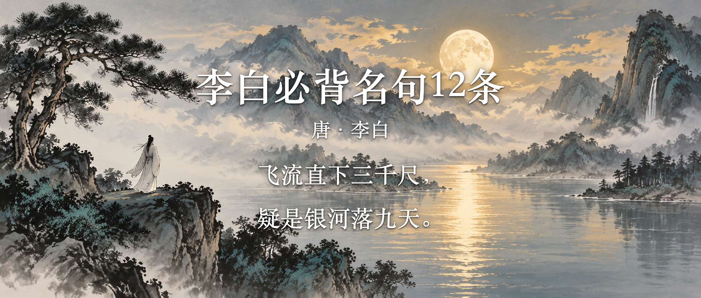

李白名句整理 · 封面
📖 目标读者：小学中高年级亲子共读 / 小升初备考
✅ 核实状态：已核实（部编版教材 + 权威史料）
📅 排序方式：按创作时间由远及近，跟随李白一生足迹
「飞流直下三千尺，疑是银河落九天」意境
档案卡片
姓 名：李白，字太白，号青莲居士
生 卒：公元701年 — 公元762年（享年约61岁）
朝 代：唐代·盛唐时期
称 号："诗仙"；与杜甫并称"李杜"
风 格：豪放飘逸、想象奇特、语言清新自然
最常传诵的名句：
李白，唐代伟大的浪漫主义诗人，被后人称为"诗仙"。他出生在公元701年（武则天长安元年），出生地有争议——一说碎叶城（今吉尔吉斯斯坦境内），一说四川江油。他生活在盛唐时期，国力强盛、文化开放，士人可以通过漫游、干谒等多种途径实现抱负——这种自由奔放的时代氛围，深刻塑造了李白豪迈不群的个性和诗风。他少年时博览群书、游历四方，25岁出蜀后漫游大江南北，42岁因道教名士推荐被唐玄宗召入长安，供奉翰林。然而他性格狂放、不擅权术，仅两年便"赐金放还"。安史之乱中，他误入永王李璘幕府，获罪流放夜郎，中途遇赦。晚年投奔族叔当涂县令李阳冰，于公元762年去世。
他的名句多出自山水漫游、饮酒抒怀、送别赠友，风格豪放飘逸、想象丰富，是小学和初中阶段考察最多的诗人之一。
📅 以下 12 条名句按创作时间由远及近排列，跟随李白从 24 岁青年漫游到 60 岁晚年的完整人生轨迹。
🏔️ 24岁 · 公元725年 · 青年漫游
"飞流直下三千尺，疑是银河落九天"
出处：《望庐山瀑布》
白话解释：远远望去，庐山的瀑布从极高的山崖上笔直地冲下来，水势极猛，足有三千尺那么长，让人怀疑那是不是天上的银河从最高的九重天上掉了下来。
📝 考点
默写：全诗必背。"庐"字广字头里面是"户"不是"尸"；"疑"左边是"匕"加"矢"，不要少写笔画。
赏析：夸张（"三千尺"极言其高）+ 比喻（把瀑布比作银河）+ 想象（"疑是"是想象而非真见）。
答题模板：诗人运用夸张和比喻的手法，把庐山瀑布比作银河从天而落，写出了瀑布气势磅礴、壮观奇美的景象，表达了诗人对大自然神奇伟力的赞叹。
🌙 25岁 · 公元726年 · 青年漫游
"举头望明月，低头思故乡"
出处：《静夜思》
白话解释：诗人独自一人在外地做客，夜里躺在床上看到窗外的月光，不由自主地抬起头来望着天上的明月，看着看着就想到了远方的家乡，于是低下头，心里满是思念。
📝 考点
默写：全诗四句必背。"望"不要写成"忘"，"低"不要写成"底"。
赏析：借月抒情——月亮是中国古诗中最常见的思乡意象；"举""低"两个动作写出思绪的起伏。
答题模板：这首诗通过描写诗人深夜望月的场景，表达了漂泊在外时对故乡的深切思念之情。
🚢 27岁 · 公元728年 · 青年交游
"孤帆远影碧空尽，唯见长江天际流"
出处：《黄鹤楼送孟浩然之广陵》
白话解释：朋友乘坐的那片孤帆越来越远，影子渐渐消失在碧蓝的天空尽头，眼前只剩下长江水浩浩荡荡地流向天边。
📝 考点
默写："碧"上面是"王白石"，不要少写一撇；"唯"教材通常用"唯"而非"惟"。
赏析：借景抒情、以景结情；"孤""远""尽""天际"层层递进写离别之远。
答题模板：诗人目送友人远去，直到帆影消失在天际，只剩下江水东流，通过描写送别时所见之景，抒发了对友人依依惜别的深情。
⛵ 43岁 · 公元744年 · 仕途受挫
"长风破浪会有时，直挂云帆济沧海"
出处：《行路难（其一）》
白话解释：总有一天我会乘着长风、破开巨浪，高高挂起云帆，横渡那茫茫大海，到达理想的彼岸。
📝 考点
默写："长"不要写成"常"；"济"是"渡"的意思，不要写成"寄"。
赏析：用典（化用南朝宗悫"乘长风破万里浪"的典故）；表达了诗人在困境中不放弃理想的坚定信念。
答题模板：诗人借用宗悫"乘风破浪"的典故，表达了虽身处逆境仍对未来充满信心、坚信终能实现理想的积极乐观精神。
🍶 51岁 · 公元752年 · 中年豪饮
"天生我材必有用，千金散尽还复来"
出处：《将进酒》
白话解释：上天既然让我来到这个世界上，就一定有我的用武之地；就算千金万银全都花光了，也终究还会再回来。
📝 考点
默写：常考情境默写——"表达诗人自信乐观、不为金钱所困的诗句"。
赏析：直抒胸臆；展现了李白豪迈自信的人生态度；"必"和"还"两字语气坚定。
答题模板：这两句诗直接抒发了诗人高度的自信和乐观精神，即使遭遇挫折也不消沉，相信自己的才华终有施展之日。
☁️ 52岁 · 公元753年 · 中年送别
"浮云游子意，落日故人情"
出处：《送友人》
白话解释：飘浮不定的白云，就像游子的心思一样没有定向；慢慢落山的太阳，仿佛依依不舍，就像老朋友之间的惜别之情。
📝 考点
默写：对仗工整，常考对偶句默写。
赏析：比喻（浮云比喻游子漂泊，落日比喻故人惜别）；对仗工整。
答题模板：诗人用"浮云"比喻游子的行踪不定，用"落日"比喻老友的依依惜别，运用对偶和比喻，将离别之情写得深沉而含蓄。
🌸 54岁 · 公元755年 · 中年游历
"桃花潭水深千尺，不及汪伦送我情"
出处：《赠汪伦》
白话解释：即使桃花潭的水有千尺那么深，也比不上汪伦送我情的那份真挚情谊。
📝 考点
默写：常考"表达友情深厚的诗句"情境默写。
赏析：夸张 + 对比（用水深对比情深，化无形为有形）。
答题模板：诗人用桃花潭水之深来衬托汪伦对自己的情谊更深，用夸张对比的手法将抽象的友情化为具体的形象，表达了诗人对友人真挚情谊的感动与珍惜。
😔 52岁 · 约公元753年 · 中年苦闷
"抽刀断水水更流，举杯消愁愁更愁"
出处：《宣州谢朓楼饯别校书叔云》
白话解释：抽出刀来想砍断流水，水却流得更急；举起酒杯想借酒浇愁，愁绪反而更加浓重。
📝 考点
默写：叠字对仗（"水更流"对"愁更愁"），是常考对偶句。
赏析：比喻（以水喻愁，化抽象为形象）；夸张（"抽刀断水"的奇特想象）；叠字修辞。
答题模板：诗人以"抽刀断水"的奇特比喻，写出了愁绪无法排遣、越解越多的无奈，表达了内心极度的苦闷与忧愁。
「朝辞白帝彩云间，千里江陵一日还」场景
🏞️ 58岁 · 公元759年 · 晚年遇赦
"朝辞白帝彩云间，千里江陵一日还"
出处：《早发白帝城》
白话解释：清晨告别了笼罩在彩云之间的白帝城，到千里之外的江陵，一天就赶回来了。
📝 考点
默写："辞"不要写成"词"；"彩"不要写成"采"。
赏析：夸张（"千里""一日"极言速度之快）；衬托（轻快的心情使船行显得更快）。
答题模板：诗人运用夸张手法，以"千里""一日"的对比突出行船速度之快，反映出诗人遇赦东归时内心的轻松喜悦。
🏞️ 58岁 · 公元759年 · 晚年遇赦（同上）
"两岸猿声啼不住，轻舟已过万重山"
出处：《早发白帝城》
白话解释：长江两岸的猿猴一声接一声地叫个不停，船还没来得及反应，轻快的小船就已经穿过了重重叠叠的山峦。
📝 考点
默写："猿"不要写成"袁"或"辕"；"重"读 chóng 不读 zhòng。
赏析：以动衬静（猿声不断反衬船行之快）；夸张（"万重山"极言山多）；情景交融。
答题模板：诗人以猿声和群山作衬托，写出了小船行驶之轻快迅捷，抒发了诗人遇赦东归时轻松愉悦的心情。
🌙 中年漫游 · 约744-755年间
"举杯邀明月，对影成三人"
出处：《月下独酌》
白话解释：举起酒杯来邀请天上的明月共饮，再加上月光下自己的影子，就成了三个人一起喝酒。
📝 考点
默写："邀"不要写成"遥"；"影"不要写成"景"。
赏析：想象奇特（把月亮和影子都当作人来共饮）；以乐写哀（看似热闹，实则孤独至极）。
答题模板：诗人运用丰富的想象，把明月和影子都拟人化，邀请它们共饮，看似热闹的场面反衬出诗人现实中无人相伴的深切孤独。
⛰️ 60岁 · 公元761年 · 晚年孤独
"相看两不厌，只有敬亭山"
出处：《独坐敬亭山》
白话解释：互相看着却谁也不嫌烦的，只有我和眼前这座敬亭山了。
📝 考点
默写："厌"是"满足、厌烦"的意思，不是"讨厌"。
赏析：拟人（把山人格化，与诗人"相看"）；以物为友（孤独中寻得精神慰藉）。
答题模板：诗人运用拟人手法，将敬亭山人格化，写自己与山相对而视、彼此不厌，表达了诗人独处时的孤独感以及在自然中寻得心灵慰藉的超脱情怀。
🏔️ 24岁 (725年) · 望庐山瀑布 — 青年漫游，意气风发
🌙 25岁 (726年) · 静夜思 — 初次离家，望月思乡
🚢 27岁 (728年) · 黄鹤楼送孟浩然 — 送别前辈，深情厚谊
⛵ 43岁 (744年) · 行路难 — 仕途受挫，依然自信
🍶 51岁 (752年) · 将进酒 — 借酒抒怀，豪气干云
☁️ 52岁 (753年) · 送友人 / 谢朓楼 — 继续漫游，内心苦闷
🌸 54岁 (755年) · 赠汪伦 — 结识挚友，情深意重
🏞️ 58岁 (759年) · 早发白帝城 — 流放遇赦，欣喜东归
⛰️ 60岁 (761年) · 独坐敬亭山 — 晚年孤寂，青山为伴
默写高频句
"举头望明月，低头思故乡"（《静夜思》）—— 全文必背
"飞流直下三千尺，疑是银河落九天"（《望庐山瀑布》）—— 全文必背
"两岸猿声啼不住，轻舟已过万重山"（《早发白帝城》）—— 全文必背
"桃花潭水深千尺，不及汪伦送我情"（《赠汪伦》）—— 全文必背
"长风破浪会有时，直挂云帆济沧海"（《行路难》）—— 情境默写高频
"天生我材必有用，千金散尽还复来"（《将进酒》）—— 情境默写高频
赏析常见角度：
对比阅读
李白 vs 杜甫：李白豪放飘逸、浪漫想象；杜甫沉郁顿挫、忧国忧民
同为送别诗：李白《赠汪伦》（以水深喻情深）vs 王维《送元二使安西》（以酒寄情）vs 高适《别董大》（以豪言壮语慰别）
同为写月思乡：李白"举头望明月" vs 杜甫"月是故乡明" vs 张继"月落乌啼霜满天"
按主题分类记忆
🌙 思乡/月亮：举头望明月、举杯邀明月
🏔️ 壮阔山河：飞流直下三千尺、朝辞白帝彩云间
🤝 送别友情：桃花潭水深千尺、孤帆远影碧空尽、浮云游子意
💪 自信励志：长风破浪会有时、天生我材必有用
😔 孤独苦闷：抽刀断水水更流、相看两不厌
易错字汇总
"望"不要写成"忘" —— 举头望明月
"疑"左边是"匕"加"矢" —— 疑是银河落九天
"庐"广字头里面是"户" —— 望庐山瀑布
"猿"不要写成"袁" —— 两岸猿声啼不住
"碧"不要少写一撇 —— 碧空尽
"辞"不要写成"词" —— 朝辞白帝彩云间
"长"不要写成"常" —— 长风破浪会有时
"济"不要写成"寄" —— 直挂云帆济沧海
学好古诗词，不靠死记硬背，靠理解、靠积累、靠抓准考点。
本篇整理了李白最经典的 12 条名句，按创作时间排序，跟随诗人从 24 岁青年漫游到 60 岁晚年的一生足迹。覆盖默写、赏析、对比阅读等核心考点。建议收藏后反复复习，考前重点看"考点归纳"和"易错字汇总"。
❤️ 关注我，每天解锁一位诗人名句汇总，陪孩子高效学国学、稳拿考试分！